Drift alerts
'SEE ALL AVATARS' button -- current UI says 'see all voices'
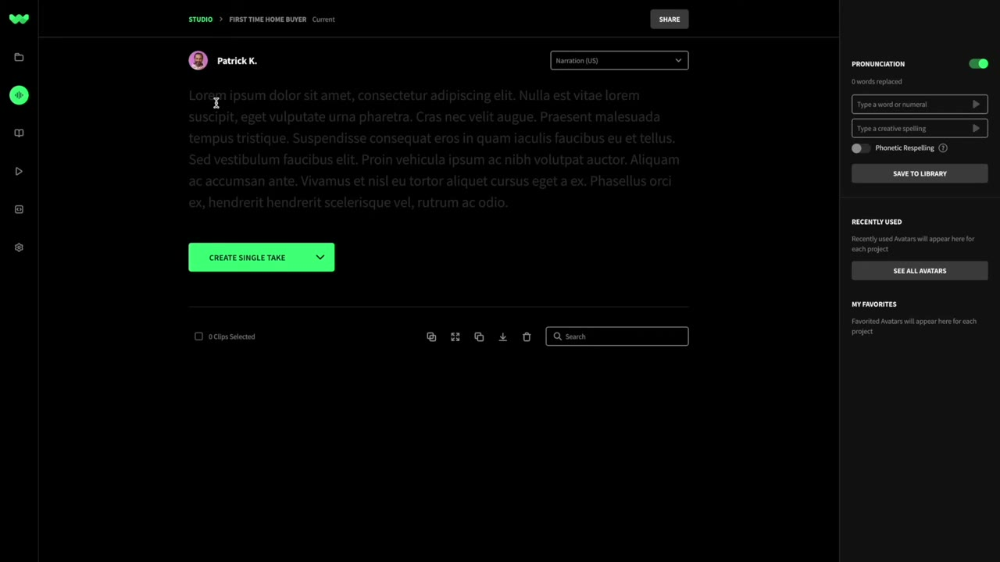
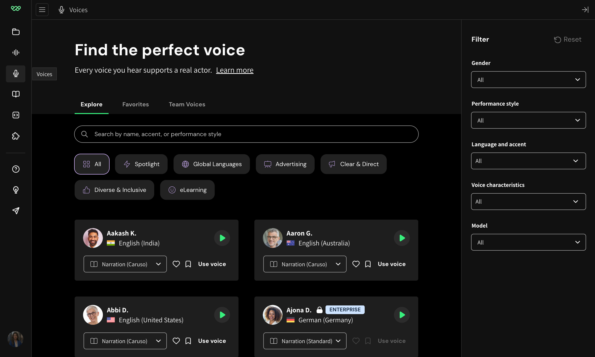
Current Studio UI labels the link 'see all voices' and the panel copy says 'voices' throughout. 'Avatars' terminology has been fully deprecated.
Corroborated by existing WellSaid Mode B audit: 'Article says See All Avatars -- live UI says see all voices'. Current-app capture confirms no 'Avatar' terminology anywhere in the voice picker or right rail.
Narration says 'voice avatar' -- product renamed to 'voices'
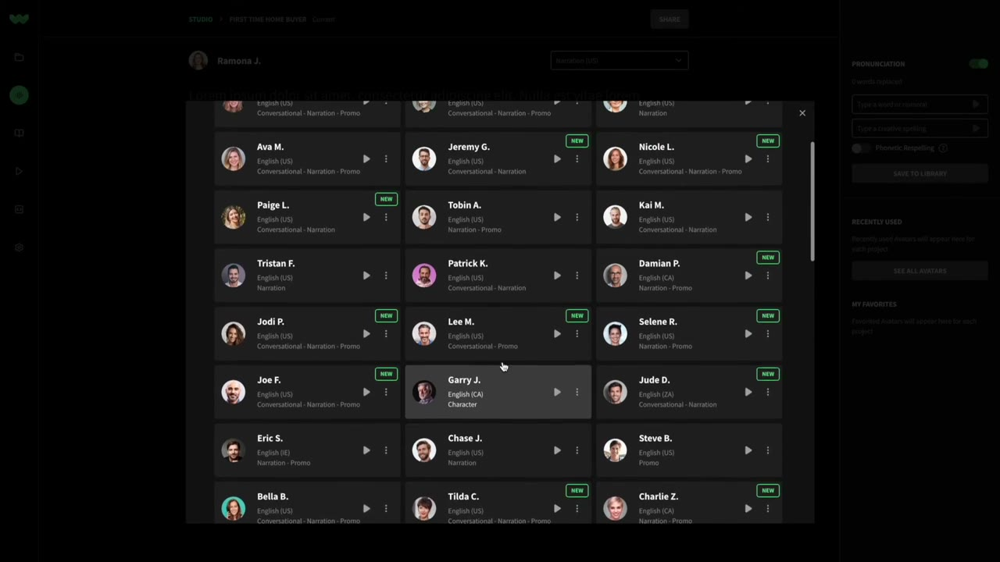
Re-record or caption: 'select the voice from our Voices panel'. WellSaid has deprecated 'avatar' terminology throughout Studio -- individual items are now 'voice cards', not 'avatars'.
Mode B audit (2026-04) and current-app capture both confirm Studio no longer uses 'avatar' anywhere in visible UI. A fossil remains in the voice-variant combobox's aria-label ('Select avatar variant') but that is an accessibility-only drift -- sighted users never see 'avatar'.
'Current / Future BETA' version dropdown has been restructured
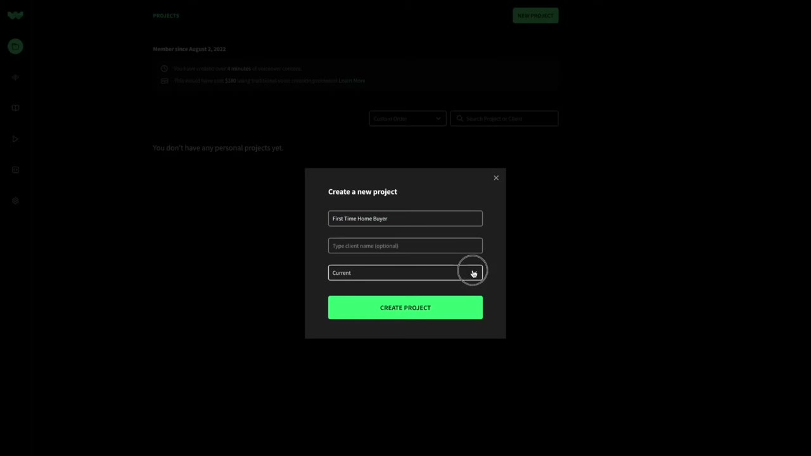
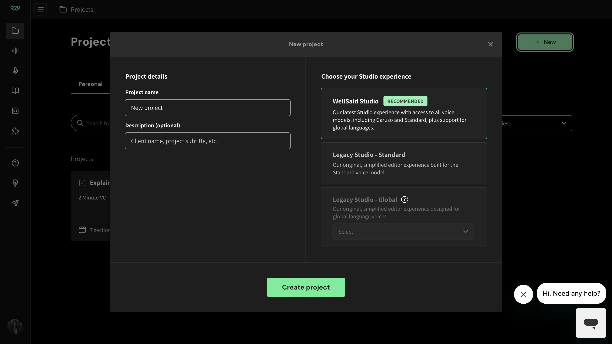
The narrator says 'select the current version of Studio' but the Current/Future BETA dropdown was replaced by three radio cards under 'Choose your Studio experience' — 'WellSaid Studio (recommended)', 'Legacy Studio - Standard', 'Legacy Studio - Global'. The 'current' option was demoted to 'Legacy Studio - Standard' (which is what this tutorial actually demonstrates). A viewer following along will not find a 'current version' selector.
Current-app capture: 'New project' modal shows three radio cards -- 'WellSaid Studio' (RECOMMENDED), 'Legacy Studio - Standard', 'Legacy Studio - Global' (with additional language dropdown).
Voice picker modal -- entirely redesigned (tabs + filters + model chips)
The voice picker is now titled 'Voices' (an explicit modal heading the video predates), with tabs Explore / Favorites / Team voices, a category pill bar (All / Spotlight / Global Languages / Advertising / Clear & Direct / Diverse & Inclusive / eLearning), and a right-hand Filter panel with dropdowns for Gender / Performance style / Language and accent / Voice characteristics / Model. Each voice card shows a country flag, a model chip (e.g. 'Narration (Caruso)'), a heart icon + bookmark, and an explicit 'Use voice' button -- replacing the 3-dot overflow.
Current-app capture of the Voices modal shows all these elements. This is a complete visual overhaul, not a rename.
Narration says 'voice library' -- panel renamed to 'Voices'
Re-record or caption: '...from our Voices panel...'. The voice selector dialog is now titled 'Voices' (confirmed in current-app capture).
Corroborated by existing WellSaid drift: 'Article says Voice Library -- dialog is now titled Voices'.
'NEW PROJECT' button renamed to '+ New' + chooser menu
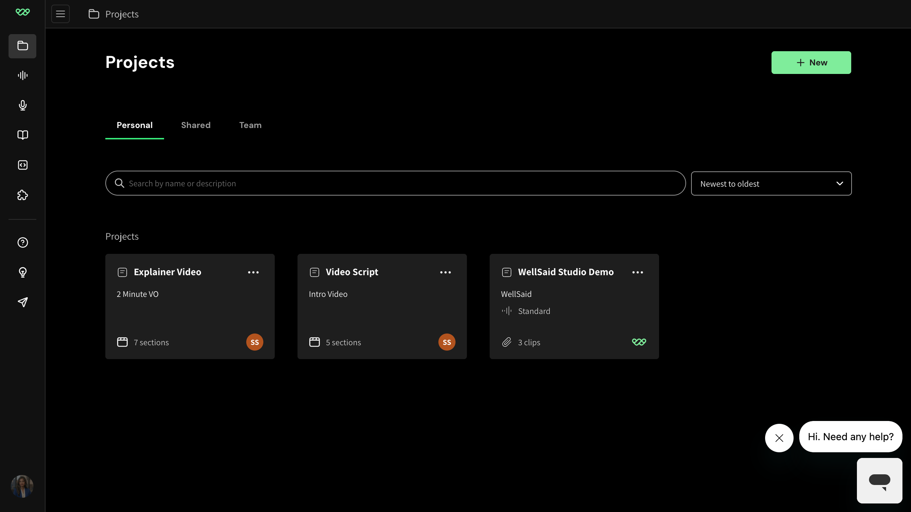
The button is now labeled '+ New' and clicking it opens a chooser menu with three items (Project / Folder / Workspace) before opening the modal. New users watching the tutorial will look for 'NEW PROJECT' and not find it.
Current-app capture of the projects home shows '+ New' button in the top-right; a second capture shows the popover menu with Project/Folder/Workspace options.
Narration says 'enter a client name' -- field renamed to 'Description'
The field is now labelled 'Description (optional)' and the placeholder reads 'Client name, project subtitle, etc.' -- 'client name' is now just one example of what to enter, not the field's purpose. Re-record or caption accordingly.
Current-app capture of the New project modal.
Right rail: 'PRONUNCIATION' section replaced by 'Replacements'
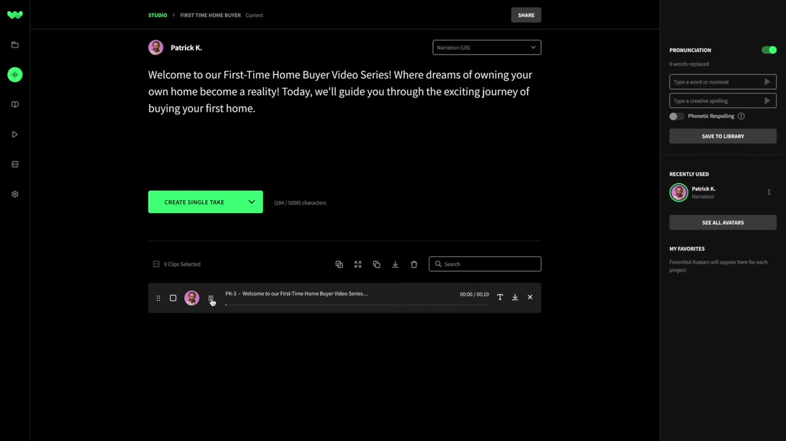
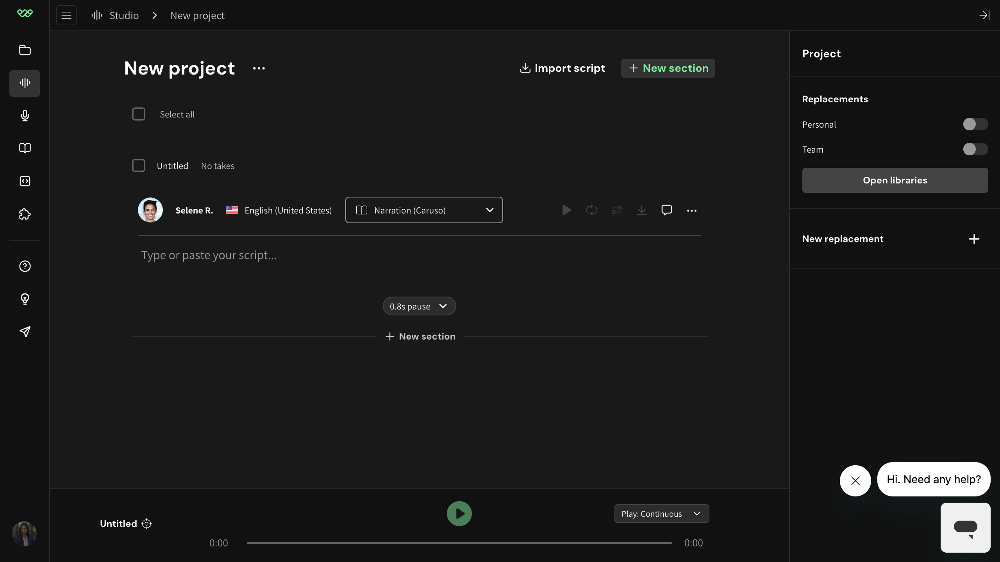
The right rail no longer contains the voice picker or the phonetic pronunciation form. The current rail is titled 'Project > Replacements' with Personal/Team toggles, an 'Open libraries' button, and a 'New replacement' affordance. The pronunciation concept evolved into the broader Replacements + Libraries feature.
Current-app capture of the editor right rail.
Article refers to 'voice avatar image' — product uses 'Voices'
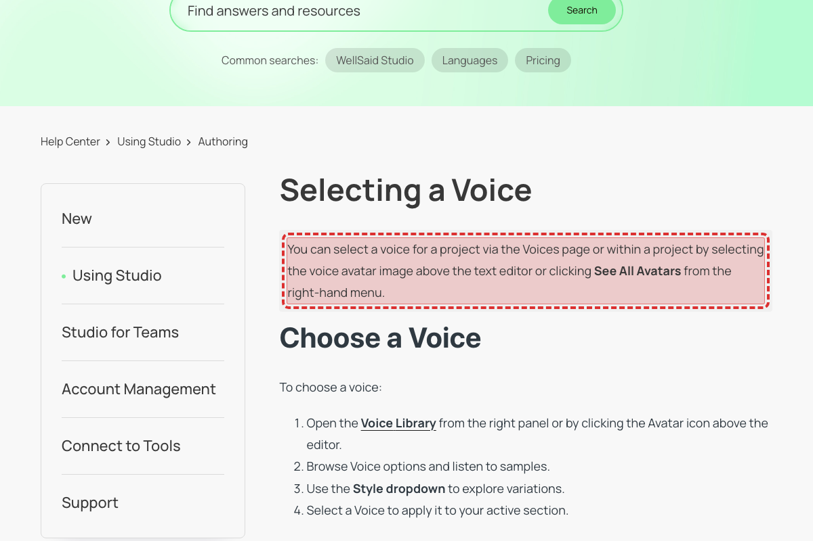
Replace 'voice avatar image' with the current voice selector UI element name.
WellSaid has renamed all 'Avatar' references to 'Voices' throughout the product UI. [Mode B UI audit: CONFIRMED: Voice cards show name + Play/Favorites/Use buttons, no 'voice avatar image']
Article says 'Voice Library' — dialog is now titled 'Voices'
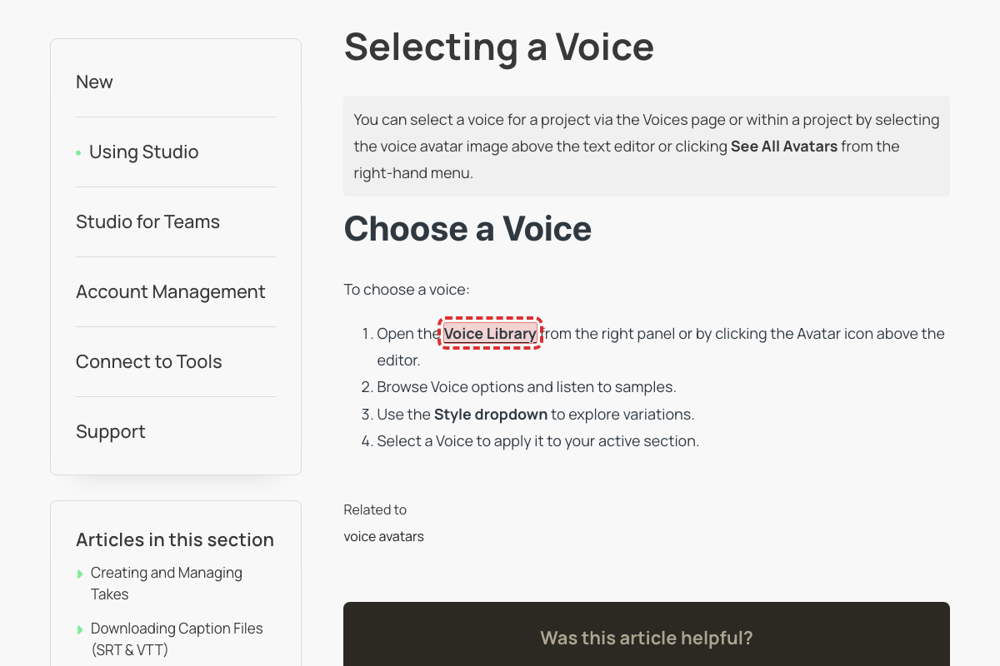
Replace 'Voice Library' with 'Voices' to match the current dialog title.
Live Studio UI (April 2026) shows voice selection panel titled 'Voices' with tabs: Explore, Favorites, Team voices. [Mode B UI audit: CONFIRMED: Nav says 'Voices', no 'Voice Library' label]
References 'Canva project' but article is about Adobe Express integration
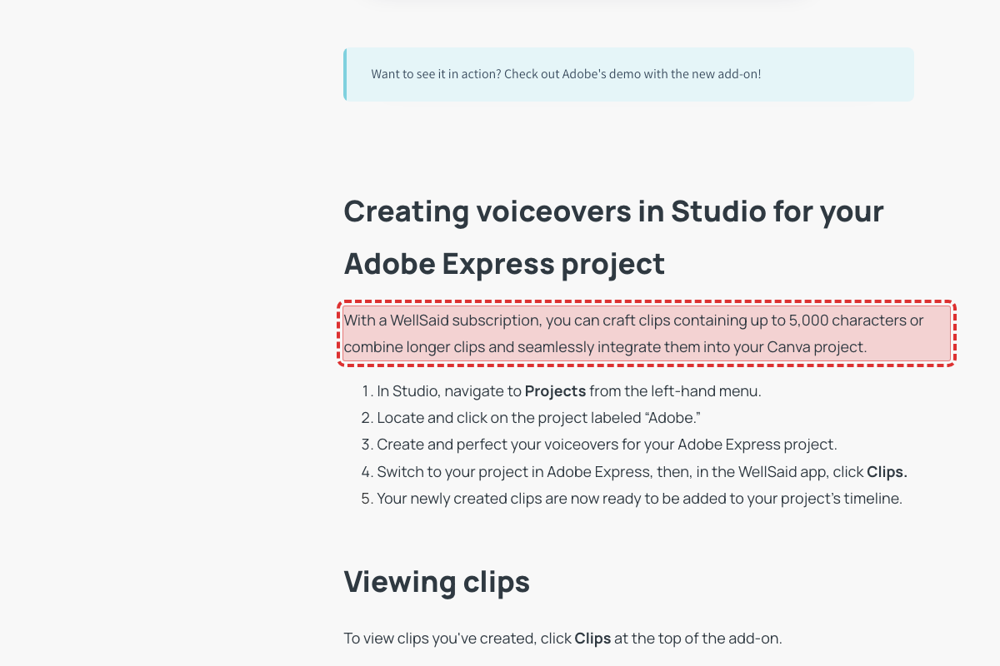
The entire article is titled 'WellSaid Studio for Adobe Express' and focuses on Adobe Express integration. The page describes the Adobe Express add-on workflow. The mention of 'Canva' appears to be a copy-paste error from documentation for a different platform or product. Canva is a separate design platform, not Adobe Express.
Favoriting uses heart icon, not 'vertical ellipses (three dots)'
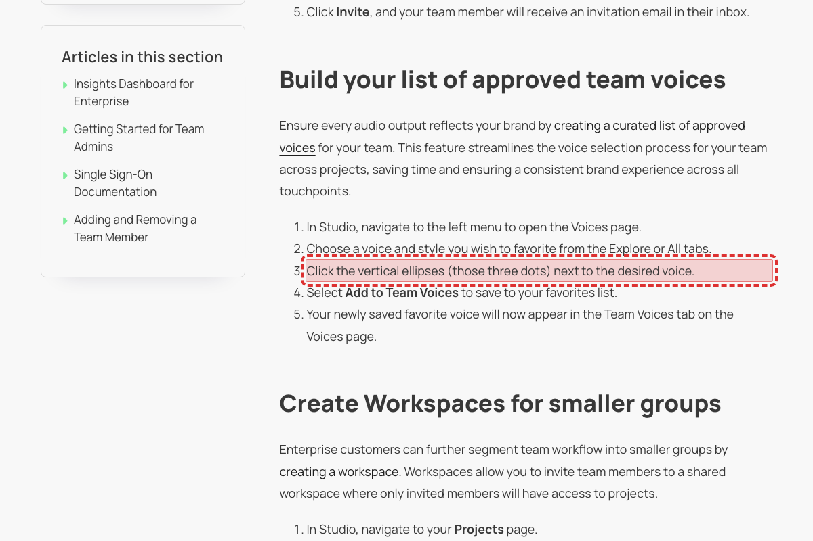
Update to use the current heart/bookmark icon workflow for adding team voices.
Live Voices panel uses heart icon for favoriting, not three-dot menu. [Mode B UI audit: CONFIRMED: 'Save to favorites' text button, no 'vertical ellipses']
Incorrect ISO country code for Danish voices
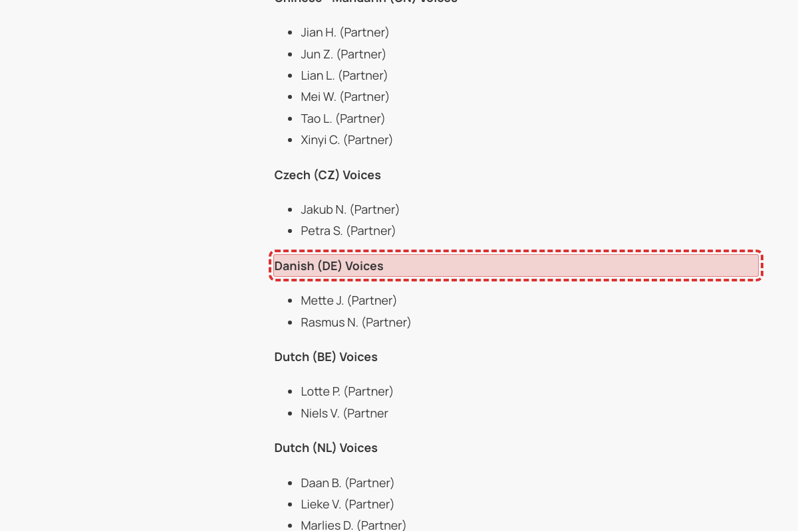
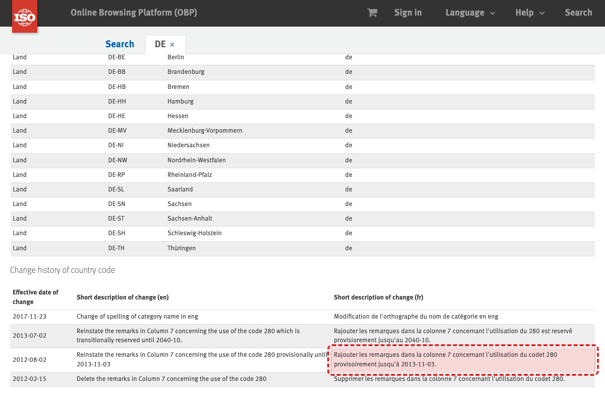
Danish (DK) Voices
ISO 3166-1 alpha-2 code for Denmark is DK, not DE. DE is the code for Germany. The page incorrectly uses DE which is the ISO code for Germany, not Denmark. [Mode B UI audit: CONFIRMED: Dropdown shows 'Danish (Denmark)', ISO code DK not DE]
Article says 'Voice Library' — now 'Voices'
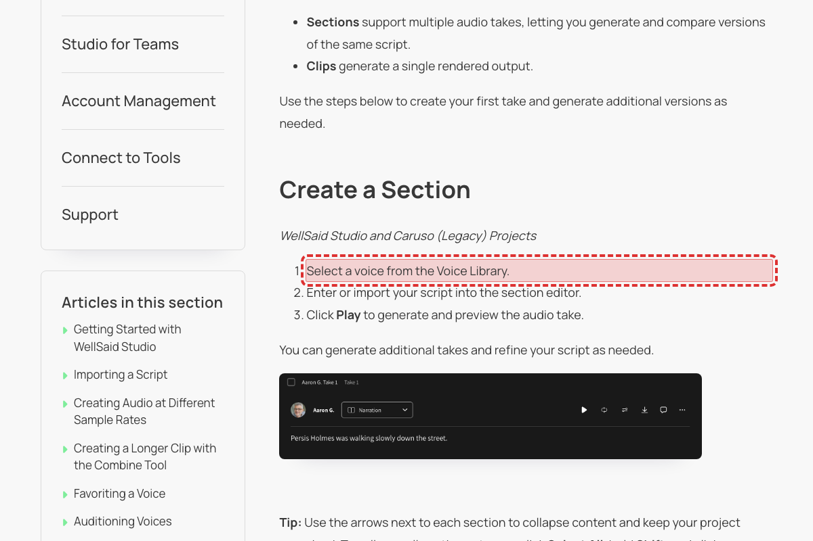
Update to 'Select a voice from the Voices panel'.
Voice selection panel now titled 'Voices'. [Mode B UI audit: CONFIRMED: Studio editor has no 'Voice Library' — voice selection is inline]
Team Voices article says 'bookmark icon' but live UI and other articles say 'heart icon'
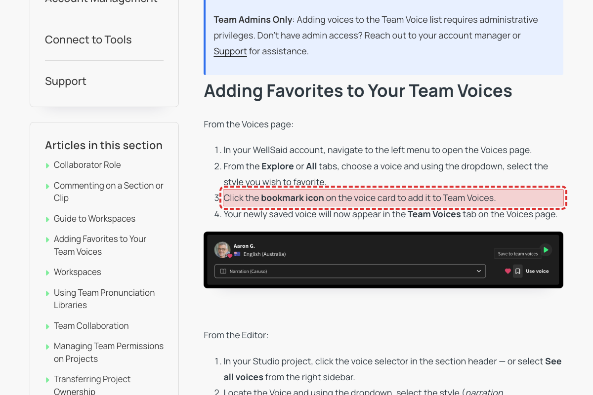
The live Studio UI uses a heart icon for favoriting voices. The sibling article 'Favoriting a Voice' (updated the same day) correctly describes clicking the 'heart icon on the voice card.' The 'Getting Started with WellSaid Studio' article also says 'clicking the heart icon on the voice card.' Update 'bookmark icon' to 'heart icon' for consistency with the live UI and other help articles.
Three sources confirm the heart icon: (1) The 'Favoriting a Voice' article (updated 2026-04-17) says 'Click the heart icon on the voice card to add it to Favorites.' (2) The 'Getting Started with WellSaid Studio' article (updated 2026-04-15) says 'Save frequently used Voices by clicking the heart icon on the voice card.' (3) The previous scan's UI audit (carried-forward issue on 'A Hub, for All Your Voices') confirmed the live Studio uses a heart icon for favoriting/unfavoriting. The 'Adding Favorites to Your Team Voices' article (also updated 2026-04-17) uses 'bookmark icon' which contradicts all three sources. [Mode B UI audit: CONFIRMED: Button says 'Save to favorites' (text), not bookmark or heart icon]
Combine feature claimed to be 'only available in Standard' but Release Notes indicate it's for Caruso
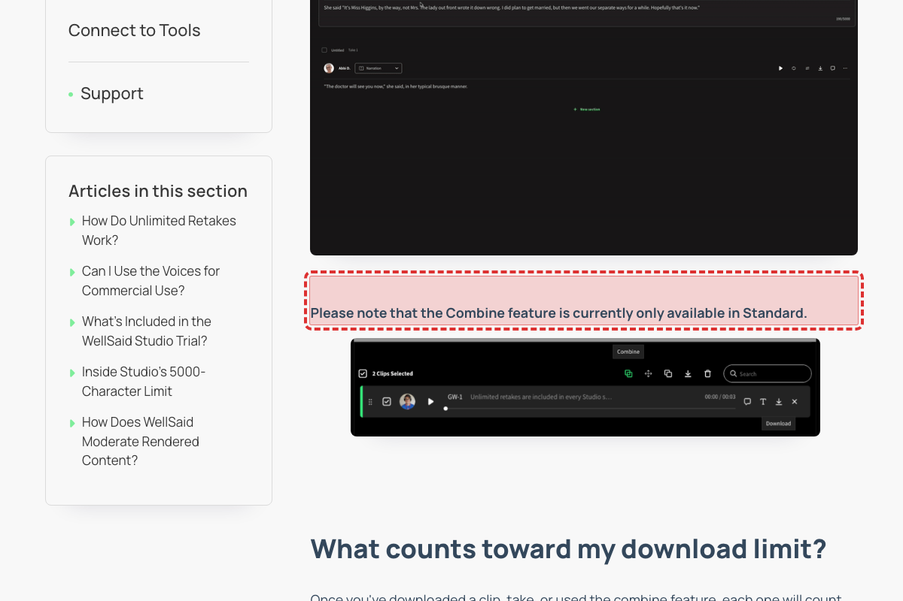
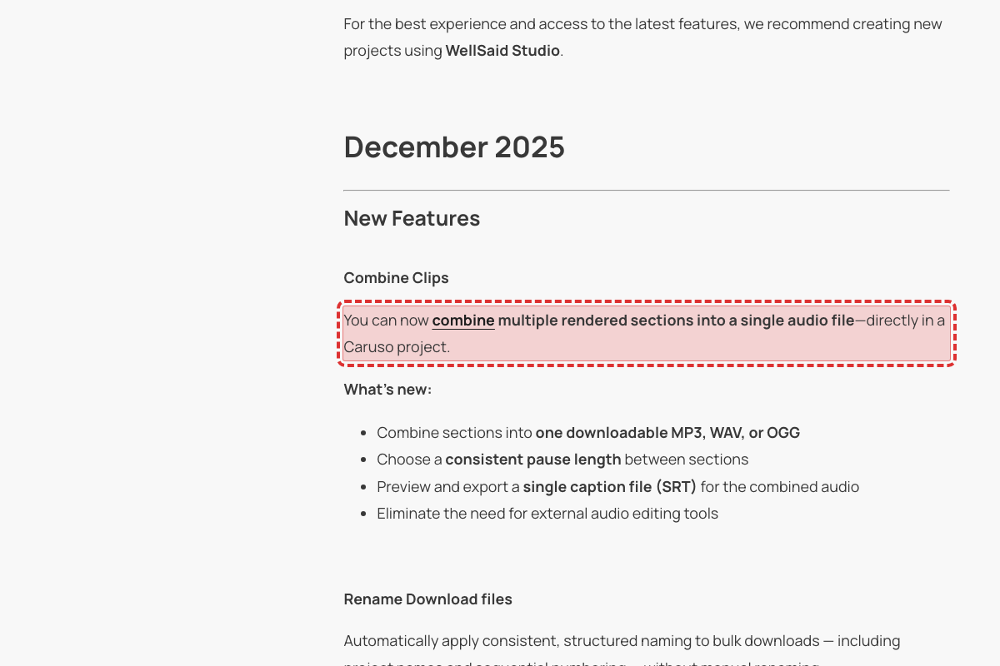
The Combine Clips feature was introduced in December 2025 as a Caruso project feature, not a Legacy Studio Standard model feature. Update to reflect current Caruso/modern Studio availability.
Release Notes (February 2026) state under December 2025: 'You can now combine multiple rendered sections into a single audio file—directly in a Caruso project.' The Caruso model is the modern, recommended model for WellSaid Studio (distinct from legacy Standard model). Page 7's claim appears to reference outdated information or an earlier product configuration.
Typo 'orignal' instead of 'original' in Pronunciation Best Practices
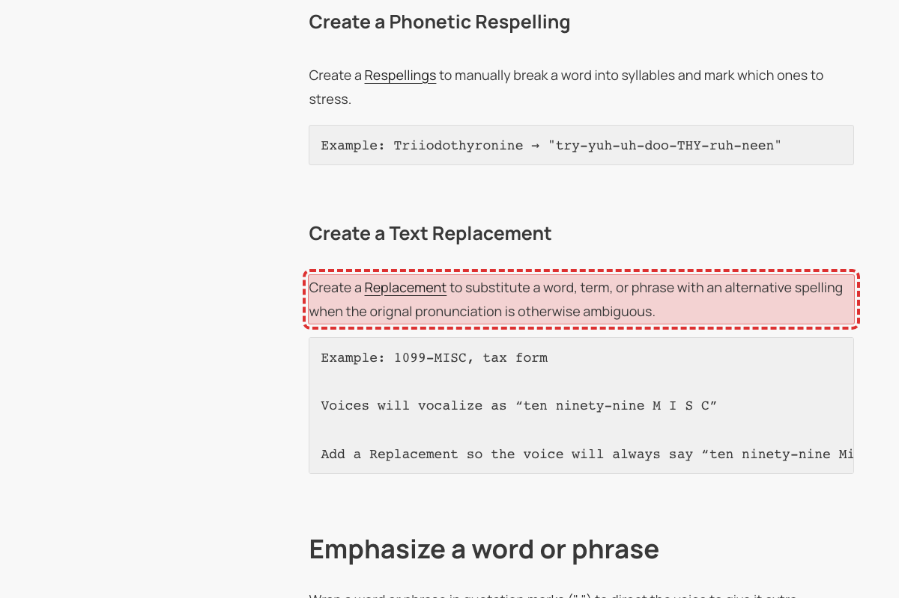
The word 'orignal' in the 'Create a Text Replacement' section is a clear misspelling of 'original'. This typo exists in the current crawled text (updated 2026-04-18).
Incomplete language support list for script import
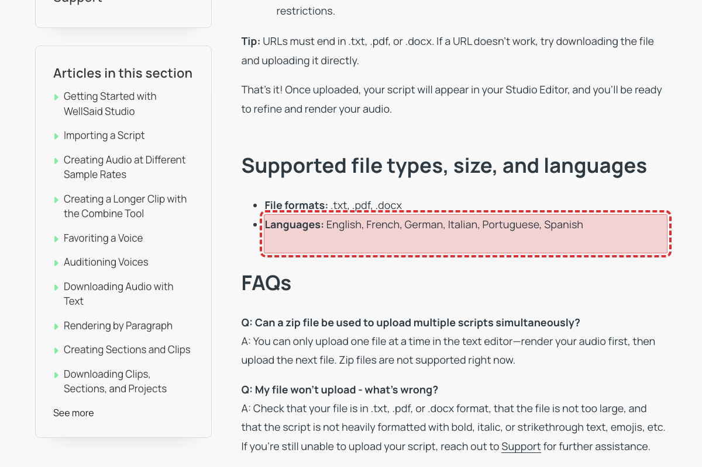
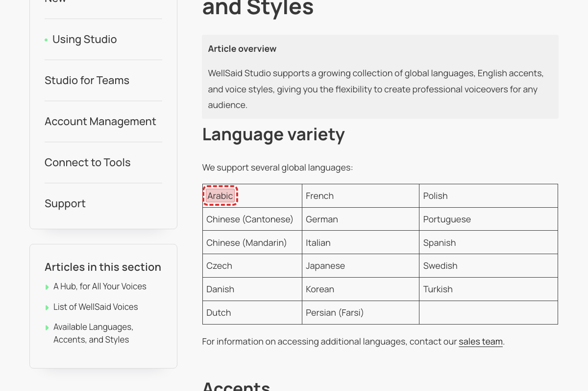
WellSaid Studio supports multiple additional languages beyond those listed: Arabic, Chinese (Cantonese and Mandarin), Danish, Dutch, French, German, Italian, Japanese, Korean, Persian, Polish, Portuguese, Spanish, Swedish, and Turkish
The article lists 6 supported import languages (English, French, German, Italian, Portuguese, Spanish). WellSaid supports 15+ languages for TTS synthesis including Arabic, Japanese, Korean, etc. However, script import may intentionally be limited to Latin-script languages due to text processing constraints. Cannot verify without testing the import feature directly.
'SEE ALL AVATARS' button — 'Avatars' renamed to 'voices'
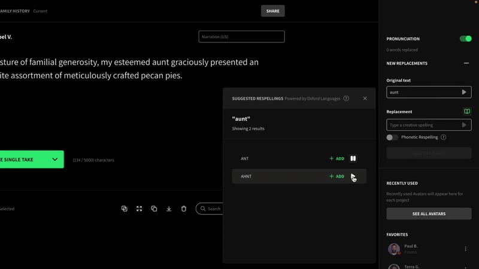
Current UI uses 'voice(s)' terminology (e.g., 'See all voices')
Rubric: Avatar(s)/SEE ALL AVATARS -> voice(s) is WARNING across all modes
Right-rail labeled 'PRONUNCIATION' — renamed to 'Replacements'
Current UI uses 'Replacements' as the top-level rail label
Rubric: PRONUNCIATION rail is truly removed; PRONUNCIATION -> Replacements is a WARNING across all modes
Projects home shows 'NEW PROJECT' button (renamed to '+ New')
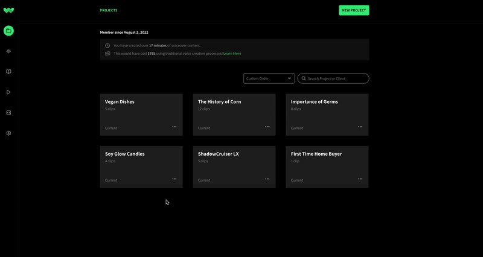
Button is now labeled '+ New' (see reference projects-home.png)
Reference projects-home.png shows '+ New' in the top-right; rubric lists NEW PROJECT -> + New as warning drift
Voice library category tab labeled 'New!' instead of 'Spotlight'
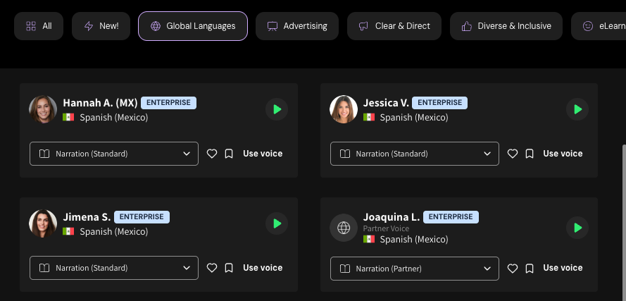
The 'New!' category tab has been renamed to 'Spotlight' in the current Voices modal. The screenshot should be re-captured showing the 'Spotlight' chip.
Reference library image voice-picker-modal.png shows the current Voices modal with chips: All, Spotlight, Global Languages, Advertising, Clear & Direct, Diverse & Inclusive, eLearning. The article screenshot still shows 'New!' in place of 'Spotlight'.
Article uses deprecated term 'avatars' instead of 'voices'
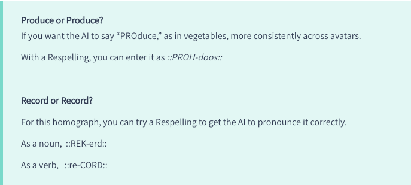
Replace 'avatars' with 'voices' — product-wide rename. Suggested rewrite: '...more consistently across voices.'
The reference library confirms 'avatar' / 'Avatars' / 'SEE ALL AVATARS' have been renamed to 'voice' / 'voices' / 'See all voices' across the product (right-rail-voices.png, voice-picker-modal.png). The article body for this page also reuses the phrase 'the way all avatars say a word', reinforcing the outdated terminology.
Project card shows outdated 'Caruso (Beta)' label for a model no longer in beta
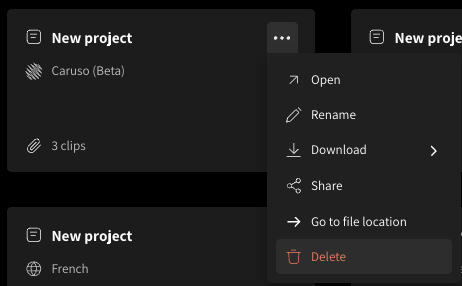
Caruso is no longer a beta feature; it is a production model. Project types on the live product are 'WellSaid Studio', 'Legacy Studio - Standard', and 'Legacy Studio - Global'. The 'Current / Future BETA' designation has been removed in all modes per the drift rubric.
Drift rubric states 'Current / Future BETA dropdown gone in all modes'. Article 40960191236371 (Sample Rates) and others now describe Caruso as 'our most advanced model' without beta qualification. Article 39122054203795 lists current project types as 'WellSaid Studio (Recommended)' and 'Legacy Studio - Standard and Global' with no beta label.
Screenshot shows legacy 'MY LIBRARY' page with green 'NEW WORD' button that no longer exists
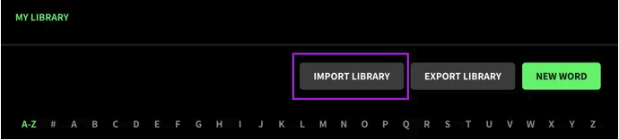
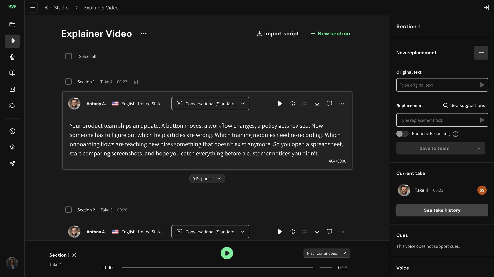
The library page is now called 'Libraries' and the primary action button to add a replacement is 'New Replacement' (not 'NEW WORD'). Per the terminology rubric, 'PRONUNCIATION' has been renamed to 'Replacements' product-wide.
Article body references navigating to 'Pronunciation from the left menu' but live Studio left-nav now uses 'Libraries' (see right-rail-voices.png reference showing 'Open libraries' and 'New replacement' instead of 'New word'). Related article 39113078033555 text explicitly says 'select New Replacement' when adding from the library, confirming the current button label.
Voices modal tabs drifted: 'EXPLORE / ALL / FAVORITES' no longer matches current 'Explore / Favorites / Team voices'
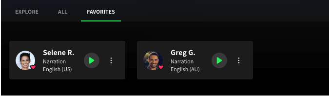
Current Voices modal uses title-case tabs 'Explore | Favorites | Team voices' (no 'All' tab). Voice cards now include country flag, 'Narration (Caruso)' model chip, heart + bookmark icons, and a 'Use voice' CTA.
Reference voice-picker-modal.png (captured 2026-04-23) shows tabs 'Explore / Favorites / Team voices' in title case with no 'All' tab; voice cards include flag, model chip, heart/bookmark, and 'Use voice' CTA. The article body even says 'From the Explore or All tabs' — a reference to a tab that no longer exists.
Pronunciation Library screenshot shows outdated 'MY LIBRARY' page with alphabetical index and old button labels
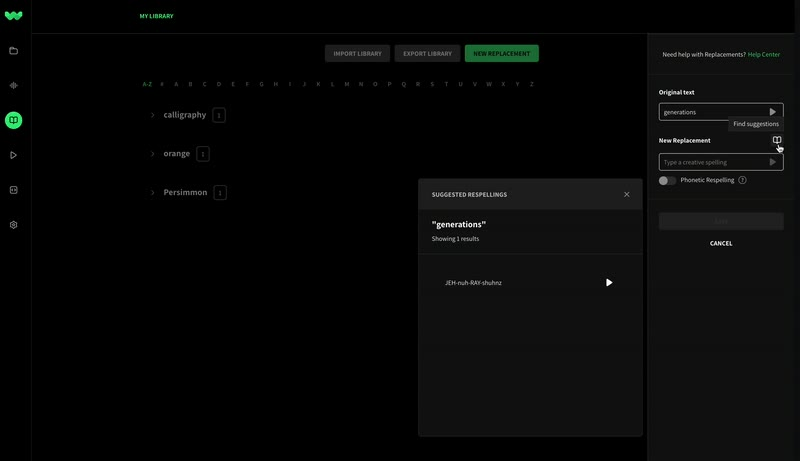
Current Studio navigation labels this area 'Libraries' (not 'MY LIBRARY') and the product-wide rename replaces 'Pronunciation/My Library' terminology with 'Replacements'. The legacy alphabetical listing UI no longer appears; users open the Replacements panel from the right sidebar ('Open libraries') or the Libraries page from the left navigation.
Article body says 'Head to the Library from the left-hand menu' and references the 'Replacements panel' and 'Replacement toolbar'. Reference right-rail-voices.png shows 'Replacements' header with an 'Open libraries' button and no alphabetical 'MY LIBRARY' view. Terminology rubric: 'PRONUNCIATION' right rail gone, replaced with 'Replacements'.
Project cards display 'Current' voice-model badge that has been removed
The Current/Future BETA selector was removed; project cards now show workspace/section count (e.g. '7 sections', '3 clips') with no 'Current' label
Rubric: 'Current/Future BETA dropdown -> warning (truly removed)'. Reference projects-home.png has no 'Current' label on cards.
Import dialog titled 'Import phonetic library' — outdated naming
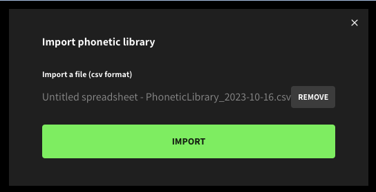
Article refers to 'Pronunciation Library' (also globally renamed to 'Replacements' per current UI). 'Phonetic library' is a stale label
Per rubric PRONUNCIATION was renamed to Replacements across the product; article still uses 'Pronunciation Library'. The screenshot's 'phonetic library' wording is older than both.
Account settings shown as horizontal tabs; article says left menu
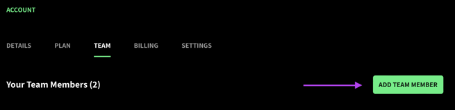
Article instructs navigation via 'navigate to your initials in the lower left and then to Account Settings > Team'. The horizontal-tabs layout in this screenshot is the older Account UI.
Account Settings shown as horizontal tabs; article says left menu
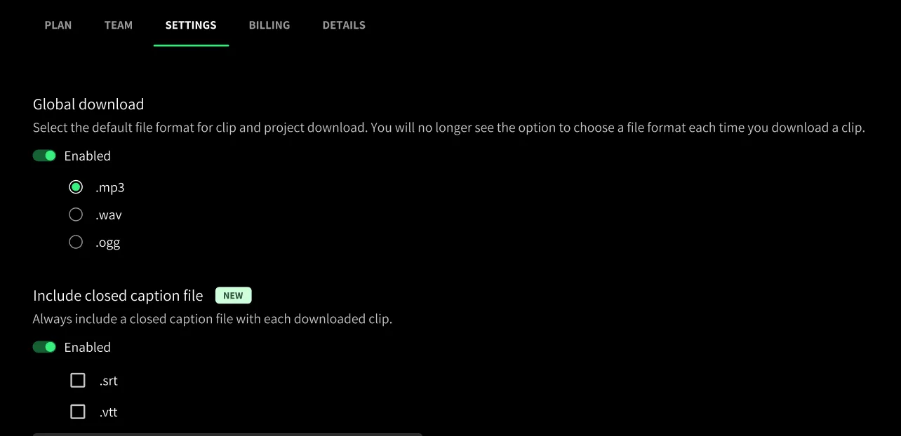
Article's 'from the left menu' instruction and the new Insights dashboard article both confirm the current Account Settings layout uses left-menu navigation. Horizontal-tabs Account page is older UI.
Screenshot shows pre-2026 Studio editor (no sidebar, all-caps 'CREATE', 'Latest' model dropdown)
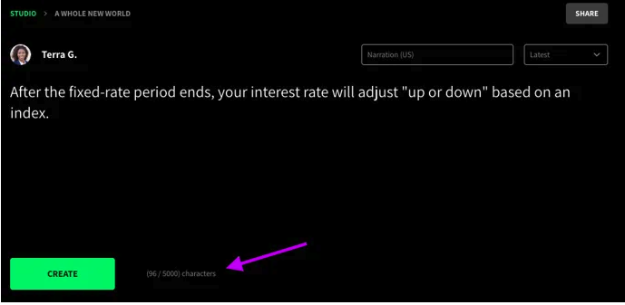
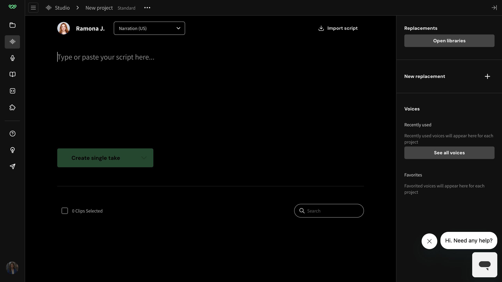
Current Legacy Standard UI uses title-case 'Create single take' button (per legacy-standard-editor ref); WellSaid Studio uses inline section play icon. 'Latest' model dropdown is no longer part of the voice header.
Compared to legacy-standard-editor ref: current Legacy shows a title-case 'Create single take' button with dropdown caret and a right-rail Replacements+Voices. Screenshot predates both Legacy and new Studio layouts.
Workspace modal buttons use all-caps vs article's title case
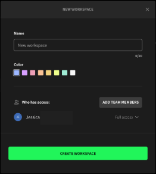
Article describes 'Click Create Workspace' and 'Add team members' in title/sentence case; current UI per refs uses sentence case (e.g. '+ New', 'Create project')
Reference new-project-modal uses title-case 'Create project' CTA, not uppercase. The screenshot's uppercase button style is older UI styling.
Legacy clip rows shown with all-caps 'CREATE' button (title case in current)
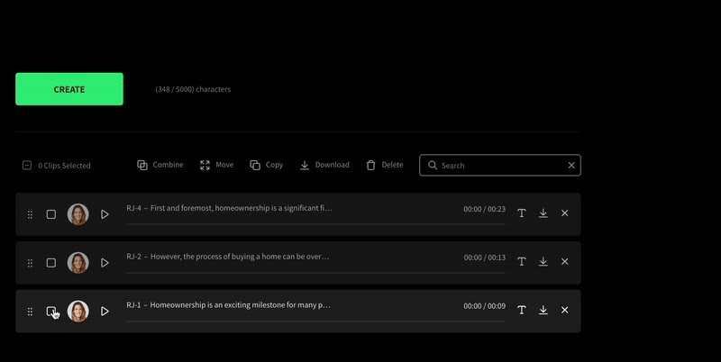
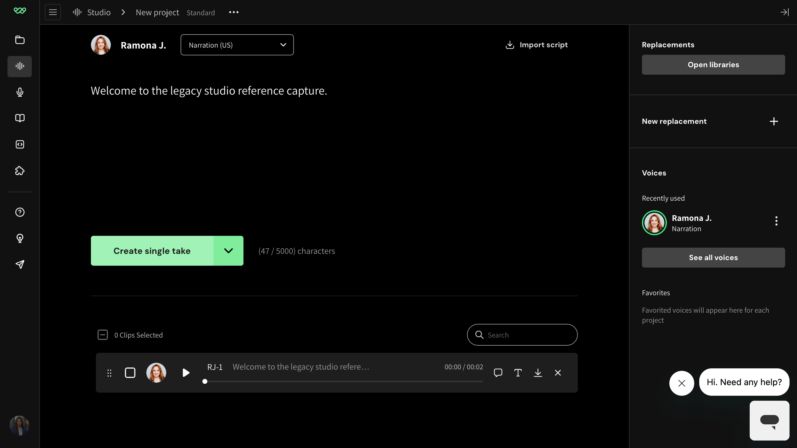
Legacy Standard's primary CTA is now title-case 'Create single take' with a dropdown caret (per legacy-standard-editor ref); the button still exists so this is a minor case-drift only.
Per rubric DOWNGRADE/DROP: 'CREATE SINGLE TAKE button (exists as title-case Create single take in Legacy — minor case drift, not removal)'. Flow/toolbar otherwise matches legacy-standard-clip-row ref.
Pre-redesign WellSaid Studio editor (missing flag/language, 'Swap voice' rail header, 'Caruso' mode tag in breadcrumb)
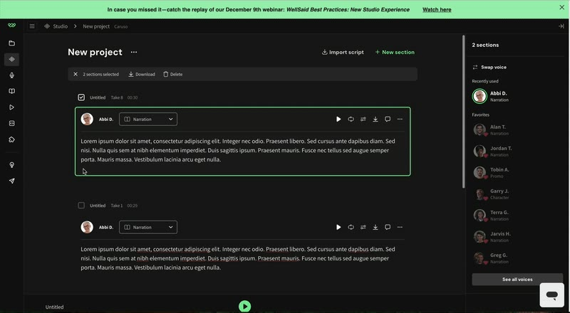
Current WellSaid Studio section rows show voice + country flag + language label + model dropdown (editor-with-voice ref); right rail is 'Project > Replacements' with Personal/Team toggles + 'Open libraries' + 'New replacement'; breadcrumb is just 'Studio > New project' without a Caruso tag
editor-with-voice ref shows 'Selene R. | flag | English (United States) | Narration (Caruso)'. This screenshot's section row lacks flag+language. right-rail-voices ref does not include a 'Swap voice' header.
Workspace modal shows old all-caps buttons 'ADD TEAM MEMBERS' / 'CREATE WORKSPACE'
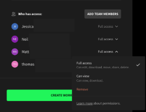
Article says 'click Add team members and select their access level'; current Share/Workspace dialogs in reference imagery use sentence case (e.g. managing-team-permissions shows '+ Add team members')
Projects page uses 'Search Project or Client' placeholder
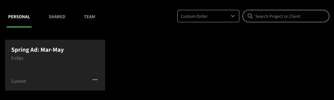
Current UI per projects-home ref uses left-rail workspace nav (not horizontal tabs) and 'Client' terminology has been replaced by 'Description'
Per rubric 'Client name' was renamed to 'Description'; the screenshot still uses the old 'Client' terminology in the search placeholder. Current projects home also no longer shows PERSONAL/SHARED/TEAM horizontal tabs.